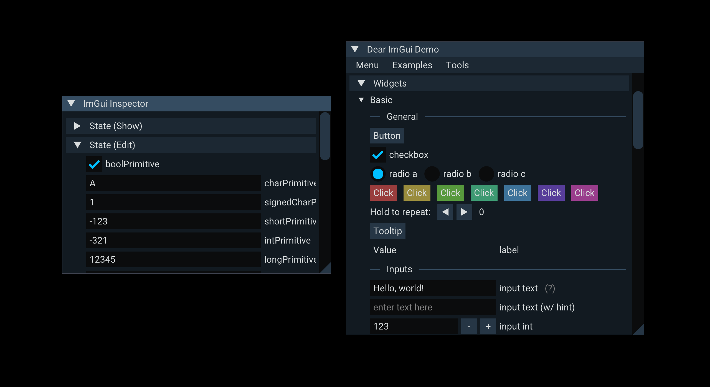
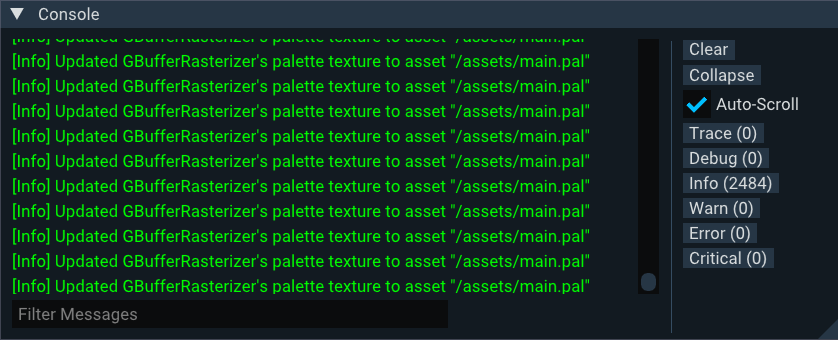

A new ImGui theme and inspector, proper support for hierarchies in scenes, distance physics constraints and tons of other improvements.
New 0.7 Features
This blog post covers the most important changes, but you can check out the full changelog in our repository.
On the Engine
Overhauled ImGui Inspector with Hook Support
Before 0.7, to inspect a Cubos value in the ImGui inspector, you used the DataInspector resource.
This resource provided methods to show and edit types through ImGui, but had no state whatsoever, which was a bit counterintuitive.
Additionally, it was not possible to externally override the behavior of the inspector, which made it impossible to customize the way certain types were displayed or edited.
This meant that, for instance, if the game developer wanted to display a custom UI on the inspector for a component of theirs, it would not be possible.
This previous implementation was replaced by a new ImGuiInspector system argument. This can be used in any ImGui system. For example:
cubos.system("inspect all velocities") .tagged(imguiTag) .call([](Query<Entity, Velocity&> velocities, ImGuiInspector inspector) { for (auto [ent, velocity] : velocities) { inspector.edit(velocity, "Velocity of " + std::to_string(ent)); } });
This new inspector allows overriding its behavior for specific types by using the ImGuiInspector::hook method.
This paved the way for us to enhance the inspector with new features such as displaying quaternions as Euler angles, breaking down matrices into translation, rotation and scale, and more.
Additionally, support was added for mask and enum types using their respective reflection traits.
Distance Physics Constraint
In version 0.7, we began adding physics constraints that users can set and customize. Previously, only the penetration constraint was available, which was used exclusively for collision solving. For now, we've added the distance constraint, which ensures either a fixed distance between two physics bodies, or a distance range (similar to a rope). To add this constraint:
commands.relate(ent1, ent2, DistanceConstraint{.isRigid = false, .minDistance = 0.0F, .maxDistance = 5.0F, .localAnchor1 = {0.0F, 0.0F, 0.0F}, .localAnchor2 = {0.0F, 0.0F, 0.0F}}); commands.relate(ent1, ent2, DistanceConstraint{.isRigid = true, .fixedDistance = 5.0F, .localAnchor1 = {0.0F, 0.0F, 0.0F}, .localAnchor2 = {0.0F, 0.0F, 0.0F}});
Where isRigid indicates whether it's a fixed distance or a range constraint, and the local anchor values specify the points on each body where the constraint is applied.
Voxel Mesh Frustum Culling
In this release we used the intersection utilities from the previous release to perform frustum culling on rendered voxel meshes. Previously, every voxel mesh loaded into the engine would have its data sent to the GPU for rendering, regardless of whether they were visible. This resulted in wasted resources, and that's exactly what this feature addresses. With frustum culling, only meshes within the camera's visible area are sent to the GPU for drawing, while others are ignored, potentially improving performance in scenes with a large number of objects.
Frustum culling is performed automatically with any type of camera—whether it's an OrthographicCamera or a PerspectiveCamera. This means no manual intervention is required to benefit from it. Additionally, a debug option has been added to the Camera component, allowing you to freeze (stop) updates to the camera's frustum, keeping it in the last calculated state.
AABB and Collider Rework
In this release, we began reworking the Colliders to make them more streamlined and easier to understand.
Previously, we had the Collider component, which contained the AABB of the Collision Shape as well as a transform to apply an offset to the AABB.
This component has now been renamed to ColliderAABB to clarify its purpose, and the transform has been removed, as it only affected the AABB and not the collision shape itself.
A Collider now represents the owner entity of a collision shape. This distinction is important, as we plan to support collision shapes composed of multiple shapes from child entities of the owner entity. We need an easy way to distinguish them in the hierarchy.
The offset of collision shapes will be determined by the entity's transform when the collision shape is part of a child entity. Otherwise, it is assumed to be centered. This functionality has not been implemented yet, but will begin rolling out in future releases.
Additionally, we now automatically add the ColliderAABB when a collision shape is added.
Voxel Shape Inertia
Up until now, we had voxel shapes that collided with each other and with boxes. However, the inertia matrix for these shapes was calculated based on the size of the voxel grid, which led to inaccuracies, particularly for shapes with many empty spaces. Now, we use a custom algorithm that treats each voxel as a point and sums the inertia for each point, relative to the center of mass, to compute the total inertia matrix. Currently, we only support uniform density, meaning each point has a mass equal to the total mass divided by the number of occupied voxels in the grid. You can check the implementation of the functions defined here for more details.
One important note is that, while we calculate the inertia tensor for this shape, we do not guarantee it will be symmetric, even though it should be by definition. The matrix is guaranteed to be symmetric only when the shape itself is symmetric. However, in all cases, it’s possible to obtain a symmetric matrix by finding the principal axis of inertia. This is a minor optimization that makes the inertia more readable, though it's not a priority.
New Scene Format
With the introduction of relations in the ECS, particularly the ChildOf relation, hierarchies became essential in Cubos scenes. This posed a problem, as the previous scene format didn’t have an intuitive way to represent hierarchies—scenes were simply flat lists of entities with no parent-child relationships. To address this, we designed a new scene format where each scene is a JSON file describing an entity, its components and relations, as well as its children, recursively. It looks like this:
{ "inherit": "ba19170e-65a0-47cd-9bd2-b4ea9447fe22", "game::Player": {}, "#camera": { "cubos::engine::PerspectiveCamera": { "fovY": 90, } }, "#gun": { "inherit": "6cb09eea-4156-4a75-b0ae-488aac843e05" } }
This scene represents an entity that inherits from another scene with the ID ba19170e-65a0-47cd-9bd2-b4ea9447fe22, meaning we're modifying an existing scene.```
To this base entity, a game::Player component and two child entities, camera and gun, are added.
The camera entity also receives a cubos::engine::PerspectiveCamera component, with a field fovY set to 90, and the gun entity inherits from another scene, with the ID 6cb09eea-4156-4a75-b0ae-488aac843e05.
This format is much more flexible than the previous one, as it allows us to easily expand upon existing scenes by inheriting from them, while also representing hierarchies in a natural way. The inheritance system has been especially useful in our recent demos, such as for setting different player skins by inheriting from a base player scene and overriding the models used.
Custom ImGui Styling
In this release we've finally customized the ImGui theme colors and font to match the Cubos brand guidelines. This change makes the engine's tools UI look more professional and consistent with the overall look of our website and brand.
Optional Render Picker
In the previous release's blog post, we discussed some of the major performance bottlenecks in the graphics renderer. One of them was SSAO, which was made optional to allow disabling it on lower-end devices. The other was the render picker.
Although work to make the render picker optional had already started, it wasn’t completed due to deadline constraints and some lingering bugs.
With this release, it's now possible to remove the RenderPicker component from a render target without breaking the graphics system. While this disables certain features, such as selecting entities with the mouse cursor, in most cases, those features aren't crucial, and the performance cost of render picking is too high to ignore.
On one particular machine, disabling render picking in our Airships demo running at 1080p on integrated graphics resulted in a jump from 30 FPS to nearly 60 FPS! This shows how this change makes it much more feasible to run Cubos games on lower-end hardware.
Center Render Voxel Pivot
Previously, the pivot point for voxel rendering was at the bottom-left corner of each voxel grid. Now, it’s at the center!
This change makes aligning voxel meshes with other entities much easier, as there's no longer a need to manually adjust offsets.
On the Core
Math Vector Reflection Trait
One issue that had been bothering us for a while was the lack of proper support for math types in the reflection system. This led to the serialization and inspector systems being unaware of them, treating them as simple structs.
To address this, we've added a new reflection trait, VectorTrait, which identifies types that represent math vectors, such as all the glm vector types.
Entity Destruction Observers
Previously, detecting when an entity was being destroyed required manually checking its destruction state. Now, we have an observable for entity destruction that triggers automatically when an entity is destroyed.
This makes handling such events easier, as we can now simply register a callback that’s invoked upon destruction. It’s especially useful for cleaning up resources or performing actions across systems without needing to repeatedly check if an entity is being destroyed.
Query Match Counting
Previously, to count matches in queries, we had to use a for loop to count them after the query was executed.
Now we added a new count method to the Query class, which directly returns the number of matches in the query, eliminating the need for a separate loop outside the class.
Wrapper Reflection Trait
A recurring pattern in our codebase are single field wrapper structs, such as Position, Rotation and Scale.
We use these types to give meaning to the data they contain (in this case, math vectors and quaternions), and to distinguish them in the Entity Component System.
To reflect these types, we previously relied the FieldsTrait, as it describes struct like types.
When reflection consumers such as the JSON serializer interacted with these types, they would usually treat FieldsTrait types with a single field as wrappers.
In the case of JSON, this led to shorter more readable output, e.g., instead of:
"cubos::engine::Position": { "vec": { "x": 1.0, "y": 2.0, "z": 3.0 } }
It would just output:
"cubos::engine::Position": { "x": 1.0, "y": 2.0, "z": 3.0 }
However, this behavior became problematic, as not all struct types with a single field should be treated as wrappers.
For instance, the cubos::engine::PerspectiveCamera component holds a single field fovY.
Thus, when serialized to JSON, it would output:
"cubos::engine::PerspectiveCamera": 90.0
This, of course, is not readable at all. Even worse, if someone were to add a new field to the PerspectiveCamera component, it would break the serialization format.
image the component now has a new field called farClip. How would the JSON deserializer know how to deserialize the above JSON?
To prevent issues like these while still allowing the wrapper behavior for single field structs, we introduced a new reflection trait called WrapperTrait.
FieldsTrait types with single fields are now no longer automatically treated as wrappers, and instead, only types with the WrapperTrait will be serialized in the shorter format.
On the Tools
Auto-scroll Toggle on the Console
Previously, we had to scroll manually to view the latest debug messages in the console.
Now, a new checkbox allows us toggle auto-scroll. When enabled, the console will automatically scroll to display the most recent messages as they appear.
Next Steps
On the next release we'll be introducing a Lua scripting plugin, backed by C API bindings to Cubos. Our goal is to be able to host a game jam focused on our engine by October 2025, and we believe that having a scripting language will be essential for that.
As usual, one of the focus areas of the team is improving the tooling. The tools team has received a great influx of new contributors, and we're excited to see what they will bring to the table.
You can check out the full list of things we want to get done in the milestone for the next release.